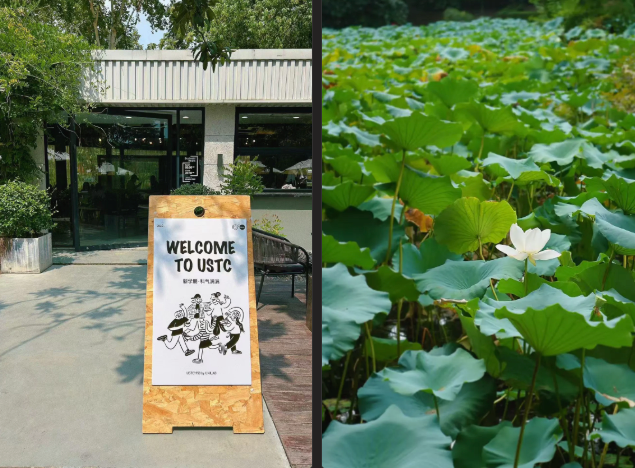
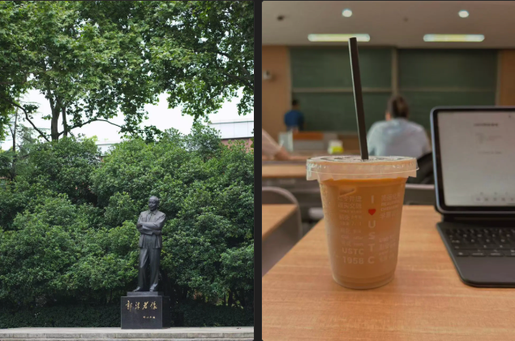
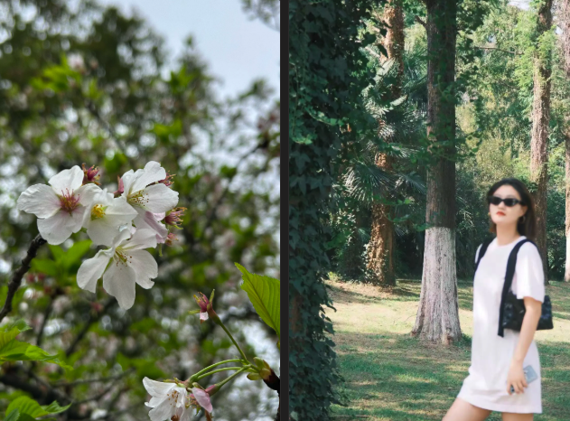

在发展心理学的视角下，人的一生可以划分为好几个阶段，每个阶段都有不同的核心任务，如果上一个阶段的核心任务没有完成，可能就会延续到下一个阶段。那我感觉，读 MBA 这件事儿，就好像在18岁求学时期没能完成就读理想院校，或顺利读研的阶段性目标，于是这个未竟的任务就延续到了近30岁的职场阶段。然而，这时候成本就高出了不少，仅仅就我所在的上海地区而言，几个名校的 MBA 项目的费用就已经高达四五十万，此外还要投入两年左右的时间，割舍绝大部分的休息日，去投入到上课、考试、各类 Workshop 以及赛事活动之中，可谓之“奢侈的消费”。
2024年，我告别了 MBA 的第一学年，进入了第二学年。在此期间，不少朋友来咨询我关于考 MBA 的建议与读 MBA 的真实体验。谈及前者，我在 2023 年便已将自己对考 MBA 的思考记录成文，详情见《MBA 备考心路｜那些深夜伏案的日子》。今天，我将聚焦于后者，针对读 MBA 的体验进行一番年度总结。

读 MBA 的初心
读 MBA 之前，通常得先明确自己的首要目的。经过一个学年与同学们的交流，我发现大家的目的主要可以分为两大类：寻找转机、沉淀学习。如果你也考虑读 MBA，不妨参考看看自己是哪一类。
第一类：寻找转机
- 提升学历，拿到双证。有些行业或公司对于职位晋升有研究生学位的要求或加分项，但是脱产读研对于已经工作几年的人来说代价太高，所以就来读一个在职研究生。2016年 MBA 改革后，与全日制研究生一样需要参加全国统考，毕业可以拿到毕业证和学位证两个证书，在各个领域的认可度与全日制的差别已经减少很多。如果是这种目的，那么你的 MBA 生涯，其实可以过得比较轻松，只需确保学分达标，顺利通过论文答辩，拿到双证即可。
- 寻求新的发展机会或合作机会。例如跳槽、转行等，像我有些同学原先是技术岗，比如金融科技公司的研发组长，想要真正转为管理岗，也有同学是在稳定的外企做管理岗，业余经营副业，希望寻找一些新的事业机会，无论是投资或合伙干点事情都持有开放心态。如果是这种目标，那么你就需要积极掌握新领域的信息，结交新领域的朋友，开阔思路。
- 扩展交际圈。还有些同学比较年轻，还没有十分清晰的职业路径规划，抑或是原本在自己工作或生活的圈子都太固定，也没有太多结识新朋友的靠谱渠道，那么就读个 MBA，外地的同学也可以顺便每周末来上海体验体验。如果你是这类目标，那么就应踊跃参与甚至亲自组织各类活动，主动与校友交流互动。像我有同学就在读 MBA 期间交到了校友男朋友。
第二类：沉淀学习
- 学习系统性的管理学知识。作为打工人，通常只是专业化分工中的某一类角色，很难从全局的商业视角去思考公司经营管理或者创业这件事儿，但是有不少人可能希望自己不局限于岗位的专业范畴，对更大的商业版图充满兴趣。如果你是这类目的，那么就需要认真参与课程本身，完成每次案例研讨与 Presentation，并且留意老师推荐或提及的专业书籍，以 MBA 为切入点持续学习。
- 在事业生活之外，寻找让自己有所沉淀与思考的空间。有些同学其实已经读过硕士，甚至也已经是海内外名校背景，事业也正在快速发展，繁忙而充满前景，对于这一类人读MBA好像是性价比不高或者看似没什么用途的事儿。这种情况为什么还会选择来读 MBA 呢？我的这类同学自己表示，主要是希望进入一个更为纯粹的环境，借机去思考，也结合管理理论把过往的经验能够沉淀下来。若是这种情况，那么选择自己感兴趣的课程，然后结合理论去思考自己的经历，并有所记录与输出，可能是比较好的做法。
针对不同的目的，选择 MBA 院校、度过 MBA 的方式和状态也会有所不同。在开始读 MBA 之前，我设定的目的是：提升学历的同时，系统学习管理学知识，以管理者的视角审视业务，为未来的职业发展做些铺垫，其他的，如果有所得，都是意外收获。
在第一学年结课后，我不禁自问：这趟 MBA 之行满足自己的初心了吗？
我觉得有几门课确实一定程度上拓宽了自己的视野，能够在无形中帮助自己在职业发展与看待世界上走得更远，比如《企业决策模拟》《宏观经济学》《领导科学与艺术》等。其中既有课程本身完整的知识体系带来的启迪，也有老师独特授课风格所激发的思考。截至目前，我对企业运行的各个方面至少形成了基本的认知框架，这无疑是我在 MBA 学习过程中的重要收获。
除此之外，在那些看似 “划水” 的课堂时光里，我抽空写了点东西、看了点书，还熟悉了几个同学，我们一起组队完成作业、相约聚餐、打牌娱乐，度过了不少轻松快乐的时刻，这些都是珍贵的额外收获。

读 MBA 到底值不值？
2024年1月，MBA 第一学期以一门让人原以为最无聊却最惊艳的课程——《中国特色社会主义》为结尾。洪教授从世界文明史的角度出发，看中国如何选择了社会主义道路；从数百年科技发展史，剖析中国的创新与协调发展面临的任务与挑战。
在两个周末的时间里，老师旁征博引，我们从熊彼特到韦伯，从牛顿到福山，领略了政经、历史到社会学等多个领域。感觉是把过去看过的书，用一种新的逻辑串联了一遍，并且还延伸出了更多新知，让自己的待读书单又加长了不少。
置身于这样的课堂，便会真切地感觉自己是在读研究生，在提炼、融汇多学科的知识，而非仅仅机械地完成一项既定任务。
这是一种精神上的享受。
但是如果你的初衷是学习知识，那么老实说，并非所有的 MBA 课程都有如上的沉浸式体验。一方面，对于一部分工商管理的专业基础课，无论老师授课风格多么诙谐幽默，案例多么新颖独特，都无法抵消基础概念的枯燥，让人昏昏欲睡、难以消化。另一方面，就我个人而言，由于我本科专业是金融，学过一部分 MBA 培养方案中的相关课程，例如《会计学》、《财务管理》等，加上考过 PMP，所以也熟悉《项目管理》，针对这种自己已经了解的内容，如果老师的上课方式按部就班、照本宣科，你大概率会觉得老师只是在重复那些大家早已烂熟于心的内容，于是感到百无聊赖。
除此之外，你可能还会遇到这样的情况：
- 在周末的清晨困得要死，但还是强撑着早起来上课，结果老师讲得跟 shit 一样，车轱辘重复一些众人皆知的概念。你会内心吐槽：“我还不如在家睡觉！”
- 在原本非常期待的硬核课程上，老师总是偏离主题、侃大山、吐槽学术圈，甚至讲些令人不适的爹味玩笑。你会内心吐槽：“我花这么多钱，就是来听你说这些的吗？”
没错，这些都是我在学习过程中曾产生的后悔瞬间。但体验一学期后，我还是选择继续读下去。因为相较于自己最初的目的，这些短暂的不愉快，还是能够忍受的。
经历这一年，我觉得读 MBA 仿佛是给自己一段独特的时光，让自己成为各种思想与经历的受体。很多东西都投掷在身上，然后任由自己去感知、去回应，产生复杂的感受：
- 有时候，这个东西是严谨精炼的理论体系，让你发现企业经营如此复杂。
- 有时候，这个东西是引经据典的妙语连珠，让你看到人生可以多么广博。
- 有时候，这个东西是欲言又止的无奈之音，从中你能窥探到强权、极化与举报等现象对传道授业解惑者的束缚与规训。
- 有时候，这个东西是一场精心筹备的聚会，让你感到校园记忆多么需要仪式感来维系。
- 有时候，这个东西是一些令人不悦的厌女低俗玩笑，让你反复看到父权制社会的山之高。
- 有时候，这个东西仅仅是一段凡尔赛的发言，让你清晰地看到经济高速发展的过去三十年与当下衰退之间的巨大反差，感受到时代浪潮的起伏与变迁。
很多很多时候，有一个声音在告诉自己：这就是真实的生活。读 MBA，只是一小段经历，它不会大到改变我的人生，那些投掷在我身上的看不到的层层叠叠的东西，才会。MBA，不会成为一根藤蔓，它只会成为我翅膀上的一根羽毛，也许会从细软到坚韧，最终也会脱落。但持续学习，知识与经历内化为自己处世的框架，才会让人飞扬起来。
也许你会问，如今网络上的学习资源如此丰富，为什么还要去线下的校园里学习呢？在我看来，那是因为真实的连接比虚拟空间的交流更为重要，因为那存在着人性。线下课堂与研讨的可贵之处在于，身临其境的感受与记忆。就像迈克尔·桑德尔说的，先哲探讨过的问题，仍然在现代的生活之中无处不在，这就是哲学的意义，老师在上课的时候，让学生感受到自己在与苏格拉底、黑格尔对话，那就是最好的状态。
在 2024 年的 MBA 学习历程中，我曾感受过这样的片刻。因此，值得。

结语
2024 年，于我而言，依旧是持续学习、不断成长的一年，因为我有不满，也有好奇，希望体验未知的事物。MBA 正是这样体验未知的一段路，我的选择不是最好最完美的，体验当然也有好有坏。如果想要追求所谓最好的交际圈，那么可以选择北大、清华、长江、中欧等，上海地区可以选择更主流的复旦、交大、同济等。而我从性价比、个人熟悉度等各方面评估，最终选择的是中国科学技术大学的全球班（上海班），学费不及另外几所上海院校那么高昂，也方便自己短程上课，就好像在这场“奢侈的消费”里选择了一个打折版。只是，我的下一届学费就涨了5万，感觉自己多了一点庆幸。
经过这一年的求学与生活思考，我对自己的了解更深，对世界的观察也更多，新的一年依然需要面对工作、学业与生活的平衡课题，且先继续观察，继续体验吧。